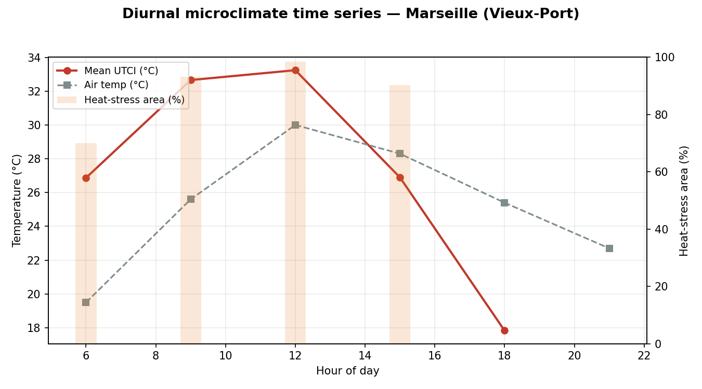

An area analysis returns one spatial grid aggregated over a time window, so a temporal series is built by running the same site across several windows. Here UTCI is sampled at six hours of an August day on a compact single-tile site, tracking how thermal comfort evolves against the driving air temperature.

| Hour | Air temp | Mean UTCI | Heat-stress area |
|---|---|---|---|
| 06:00 | 19.5°C | 26.9°C | 70.0% |
| 09:00 | 25.6°C | 32.7°C | 93.2% |
| 12:00 | 30.0°C | 33.2°C | 98.4% |
| 15:00 | 28.3°C | 26.9°C | 90.3% |
| 18:00 | 25.4°C | 17.8°C | 0.0% |
| 21:00 | 22.7°C | , (night) | 0.0% |
Peak mean UTCI 33.2 °C at 12:00 (98% of the block in heat stress); diurnal UTCI amplitude 15.4 °C. UTCI exceeds air temperature through midday, the radiant load on hard surfaces, then falls below it by evening.
One run_area_and_wait() UTCI job per hour on a single tile, each with the matching hourly weather
slice from client.weather.filter_weather_data(). See time_series.py:
python time_series.py --run --site marseille --hours 6,9,12,15,18,21.